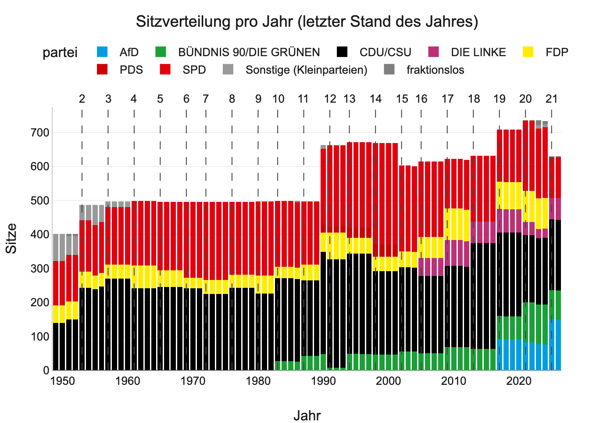
Plenarprotokolle (Teil 1)
2026Der erste Teil einer umfassenden Auswertung aller Plenarprotokolle seit 1949
Analysen - Tools - Wissen
Persönliches Portfolio von Nicky Reinert
Digitale Experimente, Werkzeuge und Projekte rund um Programmierung, KI, Internetkultur und Datenanalyse.

Der erste Teil einer umfassenden Auswertung aller Plenarprotokolle seit 1949
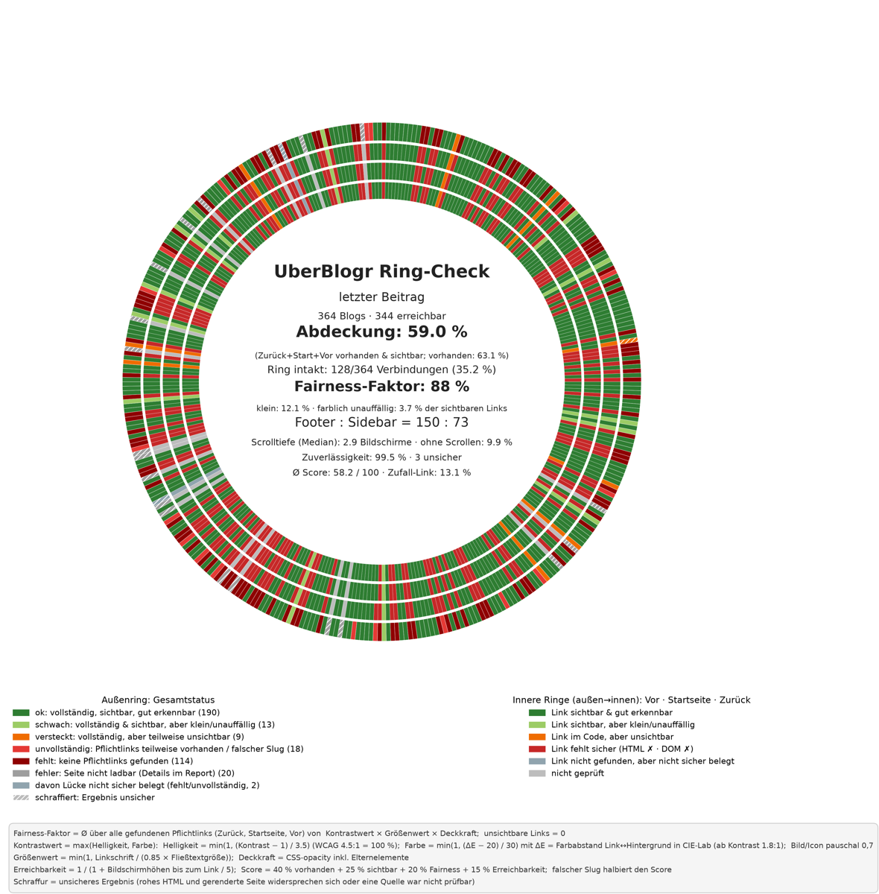
Ein kurze und knackige Analyse über die Verknüpfungsqualität des Webrings `Uberblogr`.
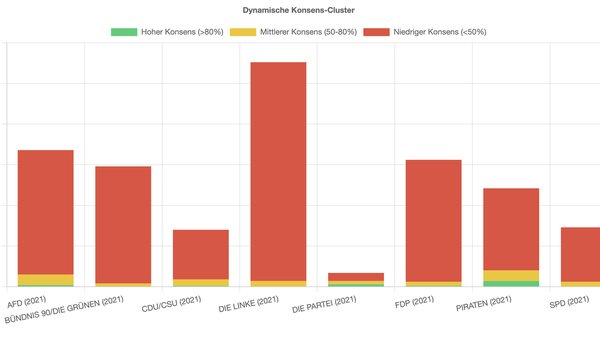
KI-gestützte Analyse der Wahlprogramme der acht größten deutschen Parteien zur Überprüfung der Behauptung einer „Verbotspartei“. Nutzt mehrere KI-Modelle.
Analyse von über 38.000 Google-Maps-Bewertungen aus 12 Burgermeister-Filialen: 304 gelöschte Reviews im Sieben-Monats-Zeitraum zeigen, dass auch berechtigte Kritik als „Kollateralschaden“ mitgelöscht wird.
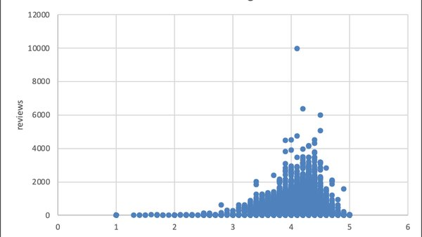
Analyse von rund 70.000 Google-Maps-Supermarktstandorten in Deutschland: die Aldi-Nord/Süd-Grenze verläuft durchs Ruhrgebiet und dann fast horizontal östlich an Frankfurt vorbei; Lidl erhält im Schnitt die besten Bewertungen (4,24 Sterne).
Untersuchung des Parkraum-Dienstleisters Fair Parken GmbH: Dark Patterns im Cookie-Banner, ungenannte Tracking-Technologien sowie ein auffälliges Bewertungsmuster (15.000+ Google-Bewertungen mit 4,2 Sternen vs. 2,2 Sterne auf Trustpilot).
Kritische Analyse aggressiver Mobile-Game-Vermarktung am Beispiel von „Dozer Demolish“: Dark Patterns, fragwürdige Werbung für Minderjährige und mangelnde Transparenz bei In-App-Käufen trotz Alterseinstufung 0-4.
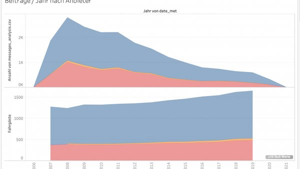
Analyse von 20.108 Einträgen aus 240 BVG-Linien (2006–2021): Aktivitätsspitze im Mai 2018, U- und S-Bahn liefern die meisten Einträge, das Wort „leider“ fällt über 6.000 Mal.
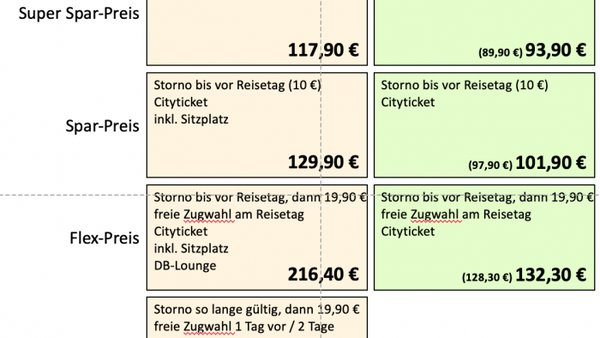
Reverse-Engineering der undokumentierten DB-Preis-API anhand von 90 Tagen Preisdaten: Preise variieren stark nach Buchungszeitpunkt, Sparpreise wirken nahezu zufällig – Ergebnis ist die alternative Preissuche „nickets.de“.
Auswertung von 43.908 Blog-Einträgen (2005–2019) per Python und Tableau: Der Spiegel als meistverlinkte Quelle, aktivste Zeit ist mittwochs gegen 17 Uhr, dazu Fefes berüchtigte Wortungetüme.
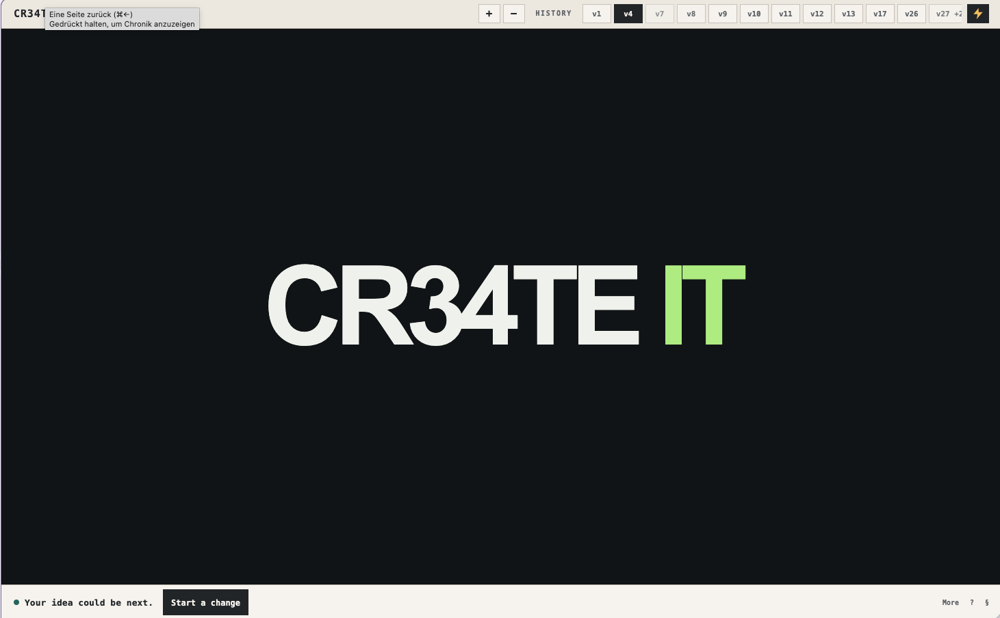
Eine offene Website, die Besucher:innen mithilfe ihrer KI anonym weitergestalten: Änderungswunsch beschreiben, KI-Ergebnis einfügen und die Seite gemeinsam verändern.
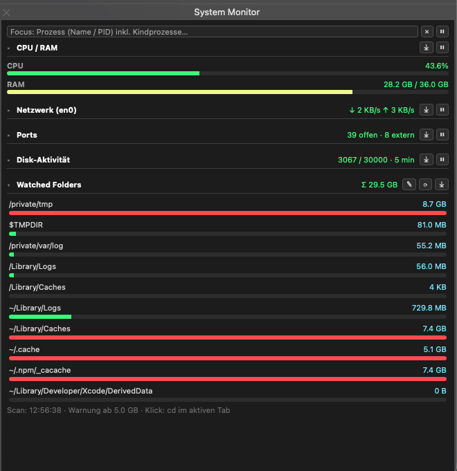
Ein Widget mit verschiedenen System Monitoring Funktionen (CPU, RAM, Netzwerk, ...) für iTerm2
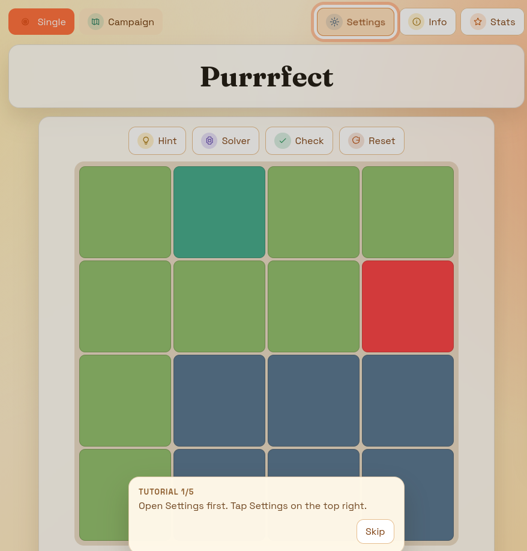
Ein Katzen-Soduko-Klon!
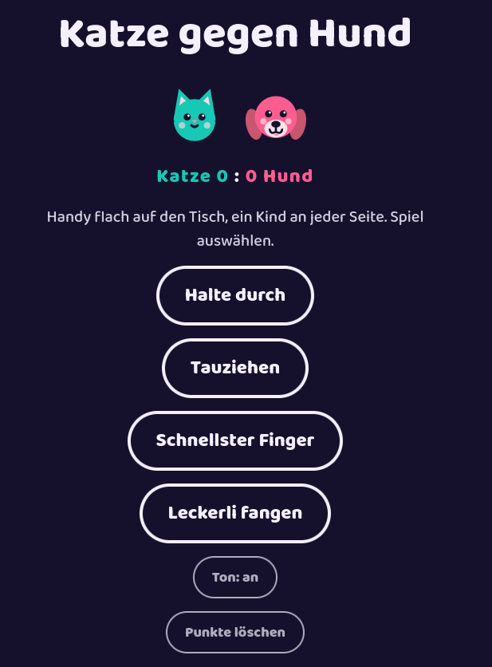
Vier Spiele für zwei Spiele, gegen die Langeweile am Handy.
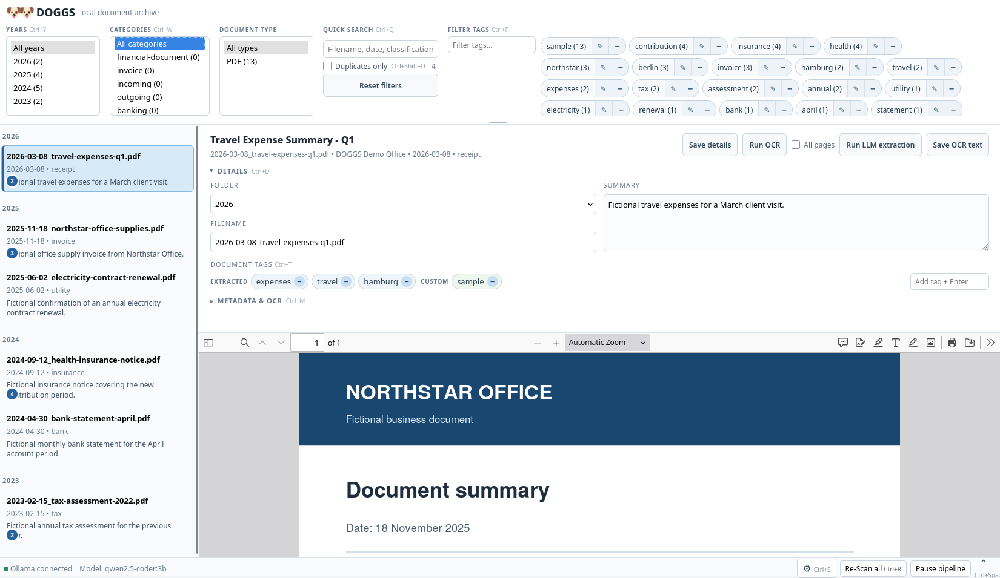
Eine Web-App zur lokalen Dokumentenverwaltung. Dokumente werden mit OCR erkannt und durch ein lokales LLM klassifiziert. Einfaceh Oberfläche mit vielen Such- und Filtermöglichkeiten.
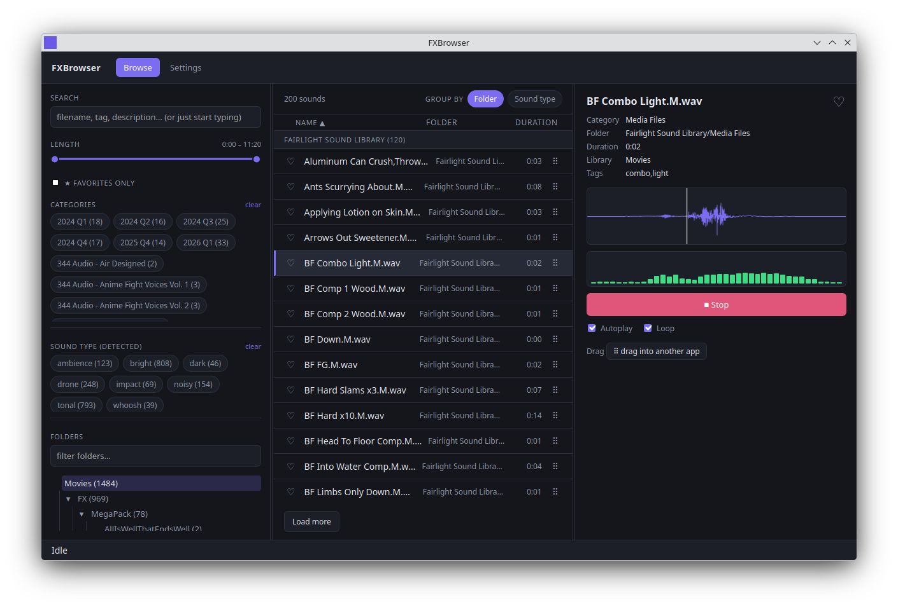
Eine Electron-App, mit der sich Audio-Tracks und Effekte einfacher verwalten lassen. FXBrowser liest Audio-Dateien aus Ordnern ein, anaylisiert sie, erlaubt das einfache abspielen und bietet viele Filter-Funktionen. Der Track kann per Drag&Drop z.B. in die DAW oder eine ander App gezogen werden.
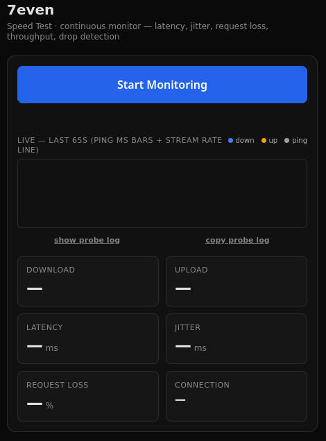
Eine Web-App und Android-App, die die Netzwerkverbindung des Gerätes in regelmäßigen Abständen überprüft und die Ergebnisse in einer übersichtlichen Statistik darstellt.
Eine Android-App, mit der Anwendungen und Einstellungen blockiert oder versteckt werden können.
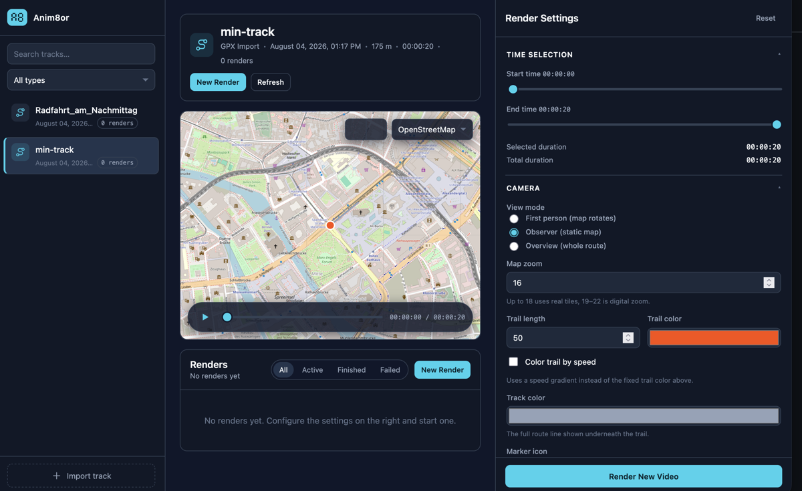
Verwandelt GPX-Aufzeichnungen von Rad-, Lauf- oder Autotouren in animierte Kartenvideos – als Zeitraffer, mit freier Kamera und individuellem Design
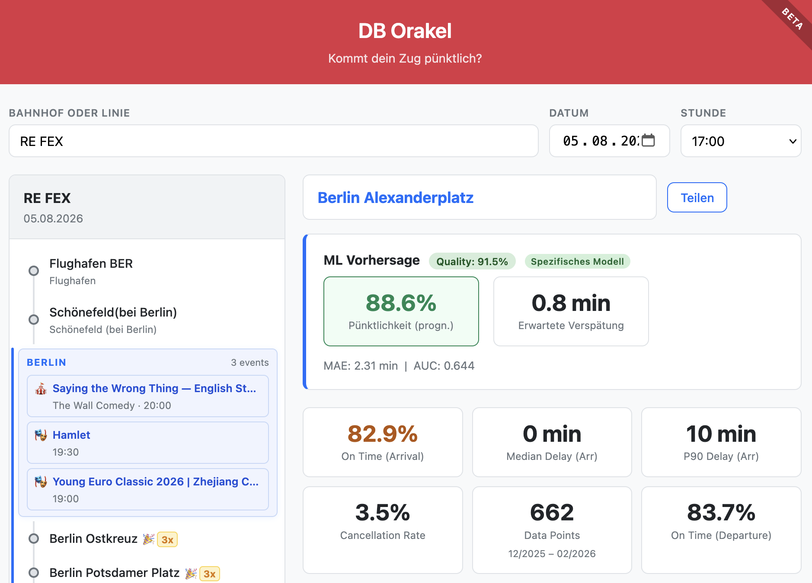
Experiment zur Vorhersage der Pünktlichkeit der Deutschen Bahn auf Basis historischer Verspätungsdaten, Kraftstoffpreise, Wetter- und Feiertagssignale.
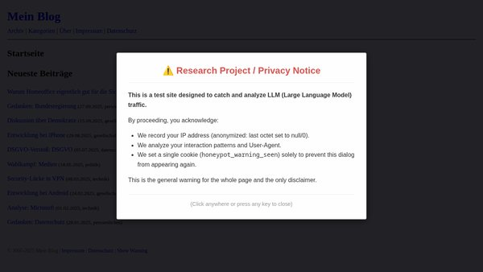
Honeypot für KI-Crawler, der Bot-Verhalten aufzeichnet und die Widerstandsfähigkeit gegenüber Prompt-Injection testet.
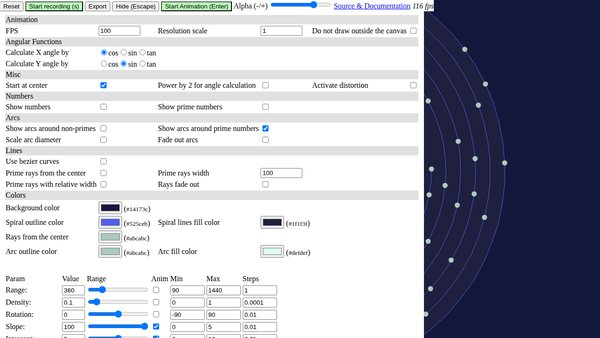
Interaktive JavaScript-Visualisierung von Primzahlen auf Spiralstrukturen. Unterstützt konfigurierbare Skalierung und Farbgebung.
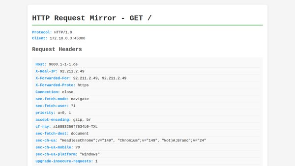
Spiegelt den Kontext von HTTP-Anfragen zur Fehlersuche bei Proxy- und CDN-Konfigurationen. Zeigt technisch relevante Anfragedaten an.
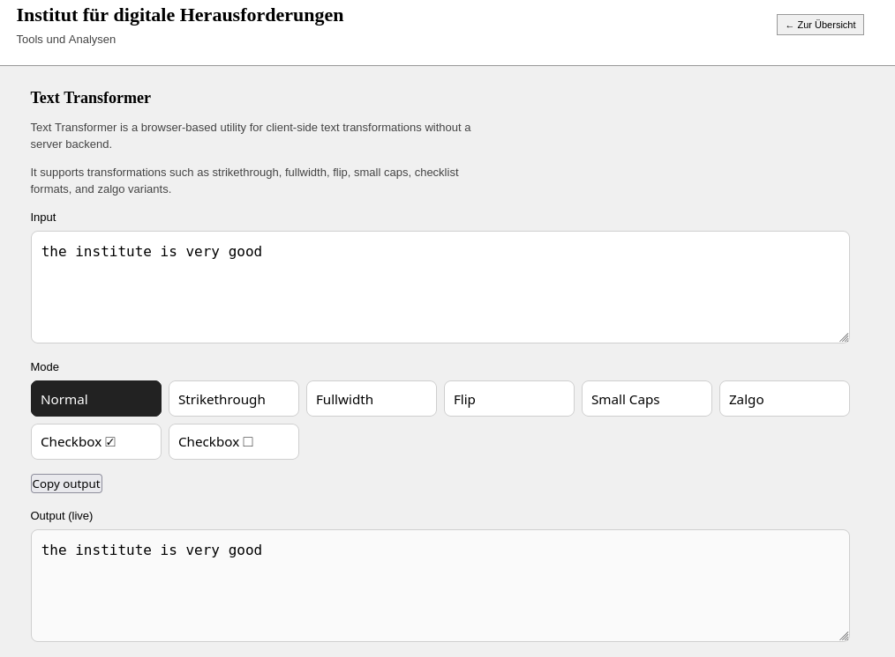
Browserbasierte Textumwandlung, die vollständig lokal im Browser ausgeführt wird. Unterstützt Fullwidth, Flip, Durchgestrichen, Small Caps und Zalgo.
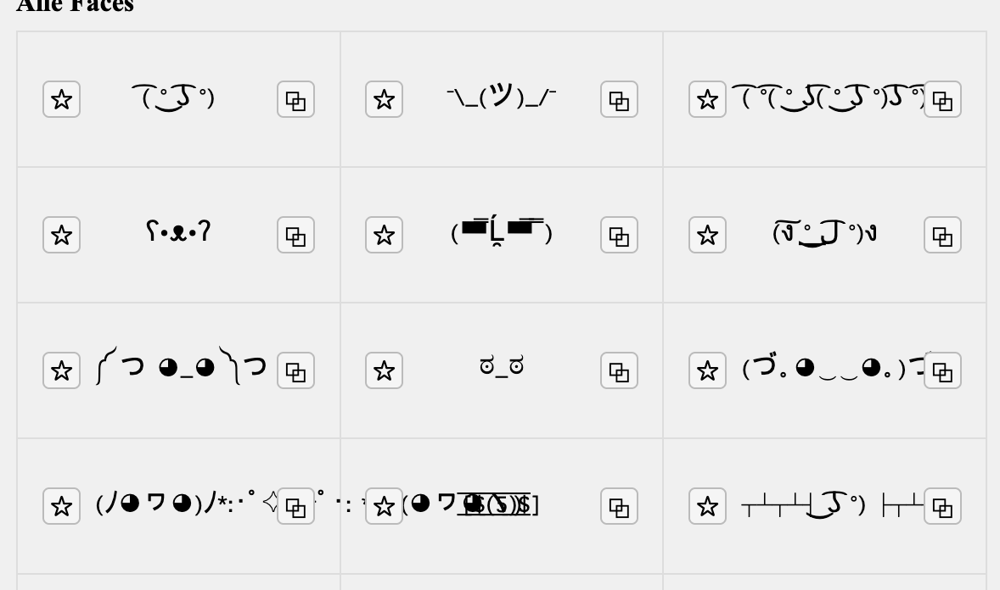
Durchsuchbare Sammlung von ASCII- und Unicode-Textgesichtern mit Kopierfunktion und Favoritenverwaltung.
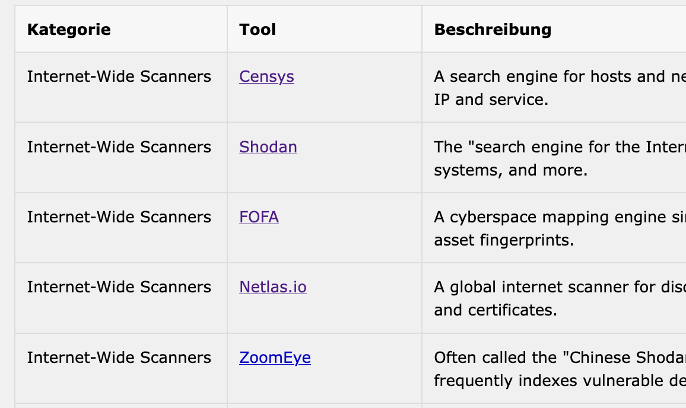
Durchsuchbares Verzeichnis von Open-Source-Intelligence-Werkzeugen mit Kategorien und Beschreibungen.
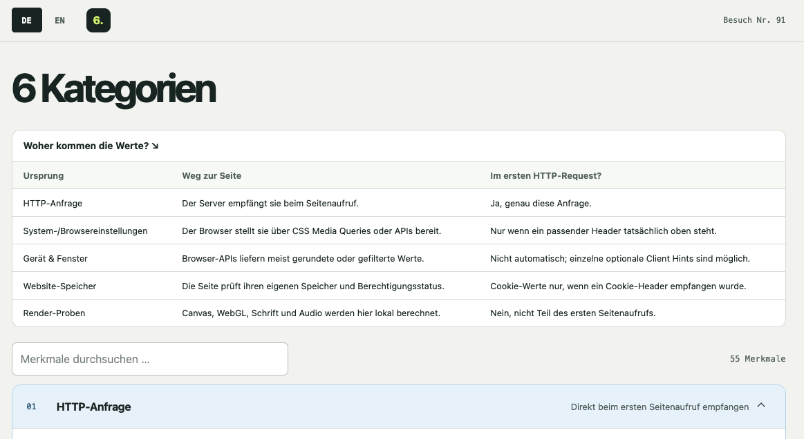
Interaktive Datenschutzprüfung im Browser mit Fingerprinting-Signalen, Leak-Indikatoren und lokal erkennbaren Browsereigenschaften.
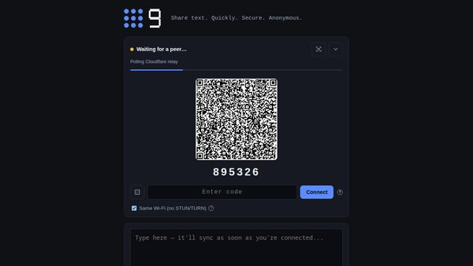
Serverloses Peer-to-Peer-Werkzeug zum sicheren Austausch von Text zwischen Geräten über verschlüsselte WebRTC-Verbindungen. Kopplung per QR-Code oder 6-stelligem Code, ganz ohne Registrierung.
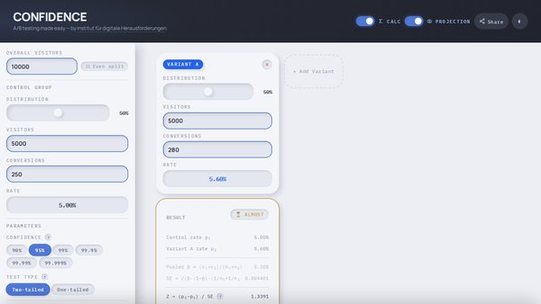
Web-Tool für A/B-Tests: berechnet Konfidenzniveaus, p-Werte und statistische Power für bis zu 5 Varianten, samt verständlichen Erklärungen gegen p-Hacking.
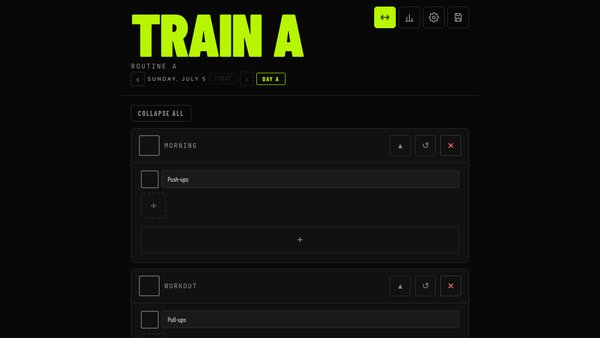
Selbstgebaute, werbefreie Fitness-Tracking-PWA nach der „Grease the Groove“-Methode mit Geräte-Sync über Firebase, Gamification und Supplement-Tracking.
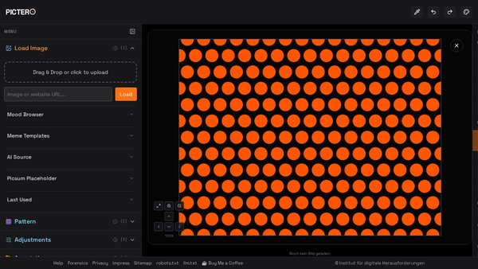
Browserbasierte Werkzeugkiste für einfache Bildbearbeitung: Zuschneiden, Skalieren, Farbkorrektur, OCR, ASCII-Konvertierung und EXIF-Anzeige in einem Tool.
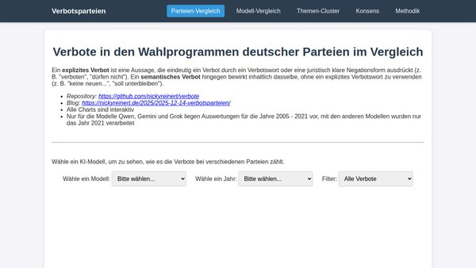
Interaktive Visualisierung, die Wahlprogramme deutscher Parteien mit mehreren KI-Modellen auf explizite und semantische Verbote untersucht und die Ergebnisse pro Modell und Partei vergleichbar macht.
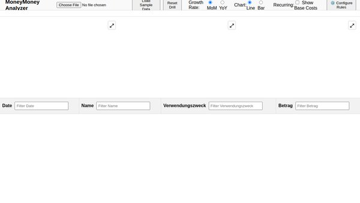
Browserbasiertes Analyse-Tool für MoneyMoney-Kontoexporte: zeigt Einnahmen/Ausgaben-Trends, wiederkehrende Kosten und ein filterbares Kontobuch – alles lokal, ohne Datenübertragung an einen Server.
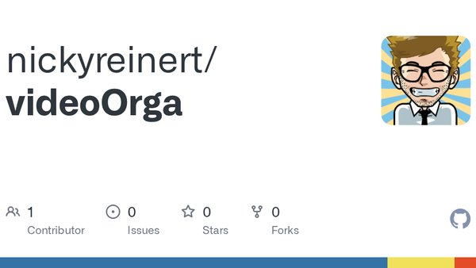
Automatische Analyse und Verschlagwortung der eigenen Videosammlung mit lokal auf der GPU laufenden KI-Modellen. Alle Metadaten werden in einer SQLite-Datenbank mit Vorschaubildern und Audio-Transkription gespeichert. Mit Web-Frontend zum Durchstöbern der Datenbank.
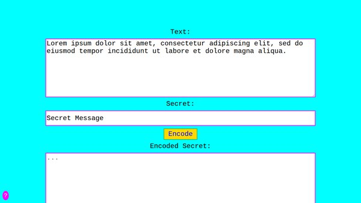
JavaScript-Steganographie-Tool, das versteckte Botschaften als Binärcode in unsichtbaren Zeichen im Text kodiert.
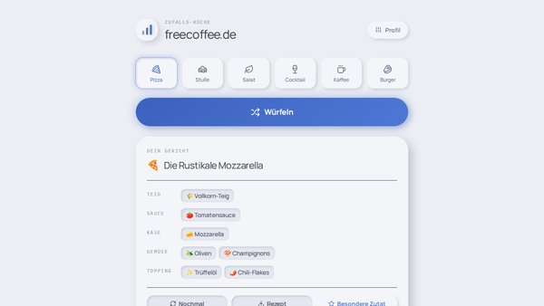
JavaScript-Web-App, die zufällige Belag-Kombinationen für Stullen generiert, wenn die Entscheidung schwerfällt.
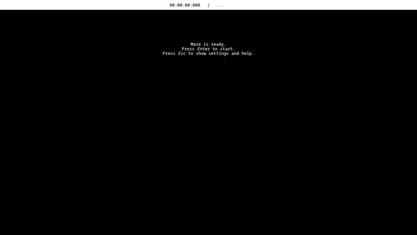
JavaScript-Browserspiel, bei dem ein Labyrinth in möglichst kurzer Zeit gelöst werden muss. Konfigurierbare Parameter und Export-Funktion für generierte Labyrinthe.
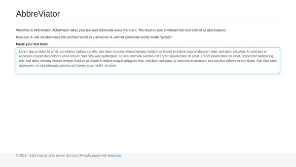
Kürzt lange Texte automatisch, indem Wörter durch Abkürzungen ersetzt werden, inklusive Abkürzungsverzeichnis – praktisch für wortreiche Fachtexte.
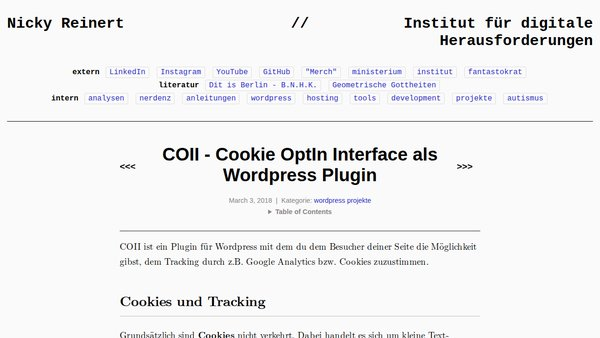
WordPress-Plugin, das Besuchern vor dem Laden von Tracking-Skripten wie Google Analytics eine Einwilligung abfragt und die Entscheidung per Cookie speichert.
Berechnet automatisch die Passungsart (Spiel-, Übergangs- oder Presspassung) zwischen Welle und Bohrung anhand von Nennmaßen und Toleranzwerten.
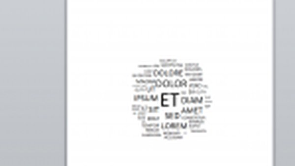
VBA-Skript, das beliebigen Text in Einzelwörter zerlegt, zählt und sortiert und daraus eine PowerPoint-Folie mit größenskalierter Wordcloud erzeugt.
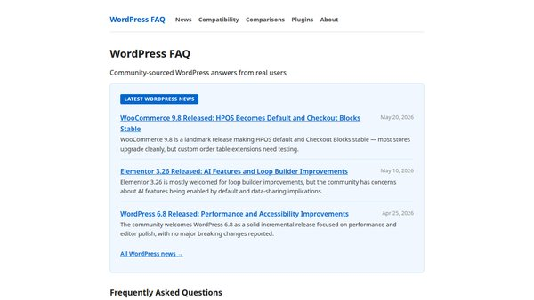
Community-Wissensdatenbank mit News, Anleitungen, Kompatibilitäts-Troubleshooting und Plugin-Vergleichen rund um WordPress, größtenteils aus Reddit-Diskussionen zusammengetragen.
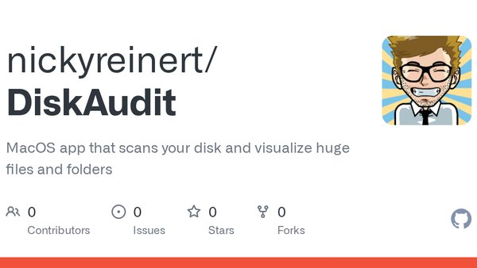
macOS-App, die die Festplatte scannt und große Dateien und Ordner visualisiert – nach Größe, Dateityp oder Ordnerstruktur.
Containerisierte JavaScript-Web-App, laut Repo-Beschreibung ein Klon eines bekannten Spielprinzips – inklusive Docker-Setup.
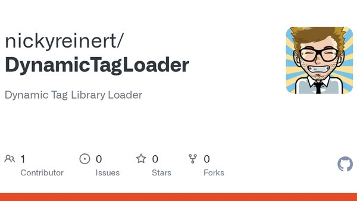
Debugging-Interface, das Tag-Manager-Skripte wie Adobe Launch nachlädt und ausgehende Requests (XHR, Tracking-Pixel, Fetch) samt GET-Parametern im Frontend sichtbar macht.
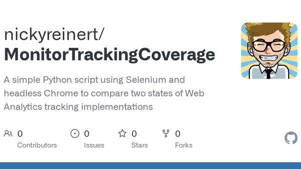
Python-Skript mit Selenium/Headless-Chrome, das zwei Tracking-Setups für eine Liste von URLs vergleicht, um zu prüfen, ob Änderungen an Adobe-Data-Collection-Implementierungen bestehendes Tracking brechen.
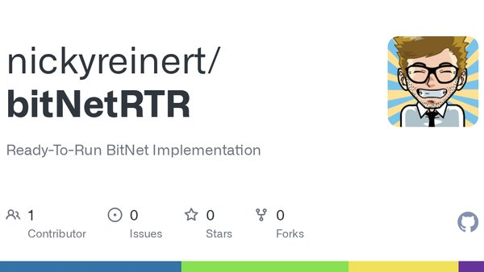
Web-Oberfläche rund um Microsofts BitNet-Framework, mit der sich 1-Bit-Sprachmodelle auch auf schwacher Hardware wie NAS-Systemen betreiben lassen.
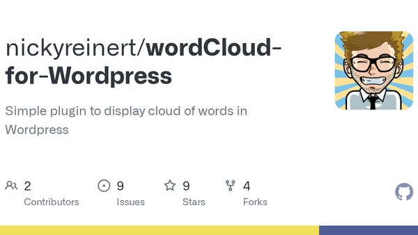
WordPress-Plugin, das Wordclouds aus URLs, Datenbankabfragen, Custom Fields oder per Bild-OCR erzeugt, auf Basis von wordcloud2.js.
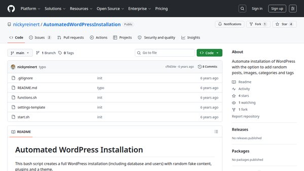
Shell-Skript, das eine komplette WordPress-Installation samt Datenbank, Nutzer und zufällig generierten Inhalten (Beiträge, Kategorien, Tags, Bilder) automatisiert aufsetzt.
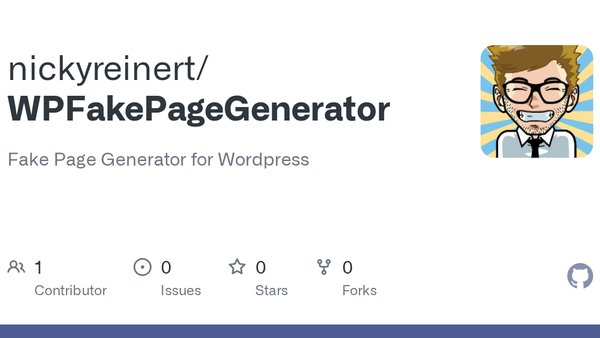
WordPress-Plugin zur automatisierten Erzeugung von Platzhalter- und Testseiten für Entwicklungs- und Demo-Umgebungen.
Shell-Skript, das automatisiert alle Datenbanken und virtuellen Hosts eines Apache-Servers verschlüsselt per Duplicity sichert.
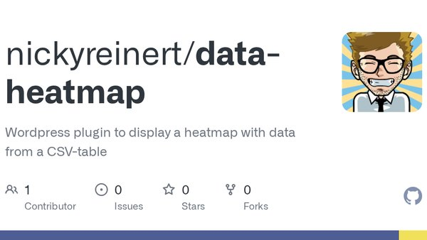
WordPress-Plugin, das dreispaltige CSV-Daten (x, y, Wert) in eine farblich abgestufte Heatmap-Tabelle umwandelt.
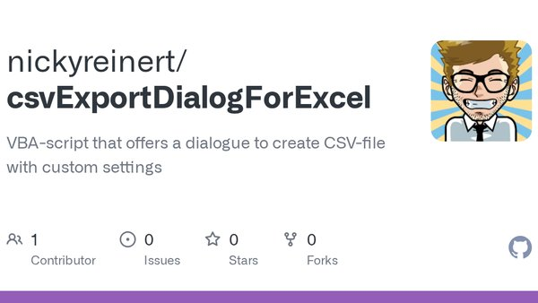
VBA-Skript, das einen Dialog zum Export von Excel-Tabellen als CSV bereitstellt – mit wählbarem Trennzeichen und Textbegrenzer.
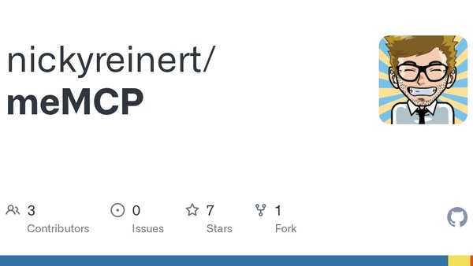
FastAPI-basierter Model-Context-Protocol-Server, der berufliche Profildaten aus GitHub, Medium, LinkedIn und RSS-Feeds bündelt und per LLM-gestützter Anreicherung als REST-API bereitstellt.
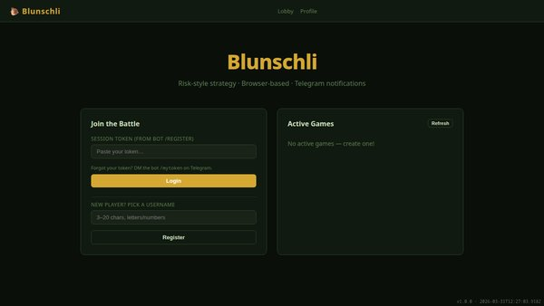
Browserbasiertes Risk-artiges Strategiespiel für 2-10 Spieler mit öffentlichen oder privaten Sessions und Telegram-Integration für Zug-Benachrichtigungen.
Browserbasiertes Lernspiel für Kinder: Am eigenen Gemüsestand verkaufen, Wechselgeld berechnen und nebenbei Kopfrechnen üben – mit Schwierigkeitsstufen und Bewertungssystem.
Das @-Zeichen hat eine lange, teils rätselhafte Geschichte und wurde 1971 durch Ray Tomlinsons E-Mail-Adressformat endgültig zum Symbol der digitalen Kommunikation.
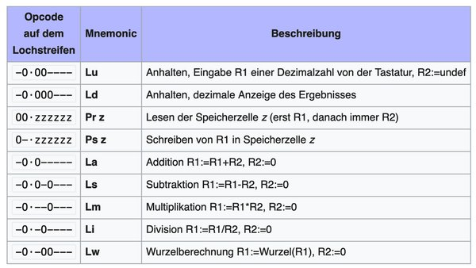
Was ist POPCOUNT, warum existiert es als CPU-Instruktion, und was hat die NSA damit zu tun? Die Geschichte hinter einer der ältesten Maschinencode-Operationen.
Eine Erkundung aus der 'Nerd Enzyklopädie' über die dienstältesten Software-Systeme der Welt. Der Artikel stellt das Reservierungssystem SABRE (seit 1960) und das IRS Individual Master File (IMF, ebenfalls seit 1960, in COBOL und IBM Assembler geschrieben) vor und beleuchtet die Herausforderungen bei der Modernisierung solcher komplexen und kritischen Legacy-Systeme.
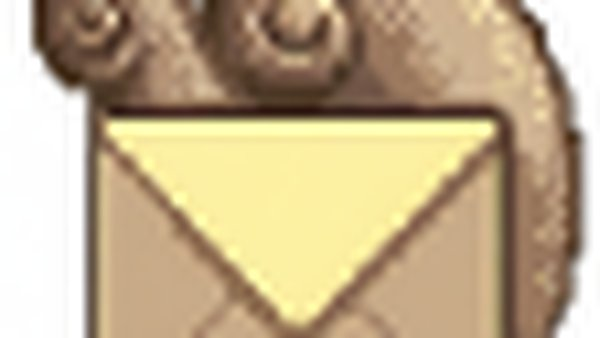
Eine Nacherzählung aus der 'Nerd Enzyklopädie' über die berühmte '500-Meilen-E-Mail'-Anekdote. Der Artikel beschreibt einen bizarren Softwarefehler, bei dem E-Mails nur innerhalb eines bestimmten Radius zugestellt wurden. Die Ursache war ein unentdecktes Downgrade des 'sendmail'-Servers, das zu einem 0-Sekunden-Timeout führte, wodurch entfernte Server nicht rechtzeitig antworten konnten.
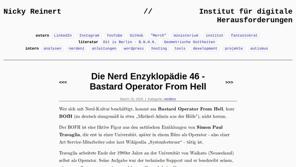
Eine Einführung aus der 'Nerd Enzyklopädie' in den 'Bastard Operator From Hell' (BOfH), eine ikonische Figur der Nerd-Kultur. Der Artikel beleuchtet die satirischen Erzählungen von Simon Paul Travaglia über einen zynischen IT-Administrator, der seine Nutzer quält, und beschreibt die Entstehung, Verbreitung und den kulturellen Einfluss dieser Geschichten, inklusive der deutschen Adaption als BAfH.
Eine Erkundung aus der 'Nerd Enzyklopädie' über die Ursprünge des 80-Zeichen-Spaltenstandards in der Informatik. Der Artikel beleuchtet historische Einflüsse wie Schreibmaschinen und Lochkarten (insbesondere IBMs 80-Spalten-Lochkarten) und diskutiert die Lesbarkeitsargumente. Humorvoll wird die Verbindung zur 'Pferdehintern-Legende' hergestellt, um die oft obskuren Ursprünge technischer Standards zu illustrieren.
Eine humorvolle Anekdote aus der 'Nerd Enzyklopädie' über Streiche mit Lochkarten in den frühen Tagen der Computertechnik. Der Artikel erklärt, wie das Ausstanzen aller Löcher auf einer Lochkarte zu Instabilität führte und wie diese manipulierten Karten humorvolle Namen wie 'Fliegenklatsche' oder 'Häkeldeckchen' erhielten.
Eine detaillierte Erkundung aus der 'Nerd Enzyklopädie' über den berühmten 'Fast Inverse Square Root'-Algorithmus ('0x5f3759df') aus dem Quellcode von Quake III. Der Artikel erklärt die mathematischen Grundlagen der Vektornormierung, die Funktionsweise des Algorithmus mit seinem 'evil floating point bit hack' und der 'magischen Konstante', und beleuchtet die ungeklärte Urheberschaft sowie die heutige Relevanz.
Eine humorvolle Anekdote aus der 'Nerd Enzyklopädie' über einen britischen Internet-Techniker, dem es gelang, Daten über ein nasses Seil zu übertragen. Der Artikel beschreibt das Experiment, bei dem über eine Distanz von 2 Metern eine Geschwindigkeit von 3,5 MBit/Sekunde erreicht wurde, und beleuchtet die unerwarteten Möglichkeiten der Datenübertragung.
Dieser Artikel behandelt Die Nerd Enzyklopädie 41 - Welche Farbe hat Chuck Norris? und bietet praktische Einblicke in das Thema.
Dieser Artikel behandelt Die Nerd Enzyklopädie 40 - isUserAMonkey und bietet praktische Einblicke in das Thema.
Eine kuriose Anekdote aus der 'Nerd Enzyklopädie', die erklärt, wie man zwei Kerzen als Ersatz für die Sensorleiste der Nintendo Wii verwenden kann. Der Artikel beschreibt das Prinzip der Infrarot-Kommunikation der Wiimote und wie Kerzen Infrarotstrahlen emittieren, die der Controller zur Positionsbestimmung nutzen kann.
Eine Erkundung aus der 'Nerd Enzyklopädie' über das ikonische Zitat 'You fool' von OpenPGP-Entwickler Robert J. Hansen. Der Artikel beleuchtet den Hintergrund dieses Ausbruchs: einen Angriff auf das SKS-Netzwerk, der durch die Ausnutzung bekannter Schwachstellen in einer veralteten, als Proof-of-Concept gedachten Software erfolgte, und dient als Warnung vor vernachlässigter Softwarewartung in kritischen Infrastrukturen.
Eine Erklärung aus der 'Nerd Enzyklopädie' über 'mehrdeutige Bilder' und eine spezifische Schwachstelle in Apples PNG-Implementierung. Der Artikel beschreibt, wie ein und dieselbe PNG-Datei aufgrund eines Bugs in Apples proprietärem 'iDOT'-Chunk auf Apple-Geräten anders dargestellt werden konnte als auf anderen Systemen, und beleuchtet die Komplexität der Bildverarbeitung.
Eine Nacherzählung des 'kik & left-pad Dramas' von 2016, das die JavaScript-Entwicklergemeinschaft erschütterte. Der Artikel erklärt, wie die Entfernung eines kleinen, aber weit verbreiteten npm-Pakets namens 'left-pad' aufgrund eines Namensstreits zu weitreichenden Problemen in Tausenden von Softwareprojekten führte und die Fragilität moderner Software-Abhängigkeiten aufzeigte.
Dieser Artikel behandelt Die Nerd Enzyklopädie 35 - JavaScript Bananas und bietet praktische Einblicke in das Thema.
Eine historische Erkundung aus der 'Nerd Enzyklopädie' über die Entstehung von JavaScript, das innerhalb von nur 10 Tagen entwickelt wurde. Der Artikel beleuchtet die Notwendigkeit einer Skriptsprache für dynamische Webseiten, die Rolle von Brendan Eich bei Netscape, die Namensentwicklung von Mocha zu JavaScript und Microsofts Reaktion mit JScript.
Eine Erklärung aus der 'Nerd Enzyklopädie' über GCJ-02, Chinas nationalen Standard für geografische Koordinaten. Der Artikel beleuchtet, wie dieser Standard bewusst Abweichungen zum globalen WGS-System einführt, offiziell aus Gründen der nationalen Sicherheit, und wie dies zu Problemen für Navigationssysteme führt. Auch der davon abgeleitete Baidu-Standard BD-09 wird kurz vorgestellt.
Eine humorvolle Erkundung aus der 'Nerd Enzyklopädie', die die Gemeinsamkeit zwischen PHP, Visa und Mandelbrot aufdeckt: rekursive Akronyme und selbst-referenzielle Konzepte. Der Artikel erklärt die Bedeutung von rekursiven Akronymen in der IT und beleuchtet humorvolle Legenden rund um Namen wie Benoit B. Mandelbrot und Bing.
Eine historische Untersuchung aus der 'Nerd Enzyklopädie' über den Ursprung des Begriffs 'Bug' in der Informatik. Der Artikel entlarvt den Mythos der Motte im Harvard Mark II Computer als Ursprung und verfolgt die wahre Etymologie des Wortes zurück zu Thomas Edison im späten 19. Jahrhundert, während er Grace Hoppers Rolle bei der Popularisierung des Begriffs in der Computerwelt würdigt.
Eine humorvolle Anekdote aus der 'Nerd Enzyklopädie' über einen peinlichen Fehler im Registrierungsprozess des frühen Internetdienstes WebTV. Ein falsch konfigurierter Filter für Benutzernamen führte dazu, dass jede Eingabe als 'schlechtes Wort' ('That's a bad word.') abgewiesen wurde, was die Bedeutung gründlicher Tests unterstreicht.
Eine unterhaltsame Erkundung aus der 'Nerd Enzyklopädie' über das Programmieren mit Emojis. Der Artikel erklärt die Grundlagen der Zeichenkodierung (Unicode, UTF-8) und beleuchtet die (begrenzten) Möglichkeiten, Emojis in gängigen Programmiersprachen zu verwenden. Zudem wird 'Emojicode' vorgestellt, eine Programmiersprache, die ausschließlich auf Emojis basiert.
Eine Erklärung aus der 'Nerd Enzyklopädie' über das Konzept des 'undefinierten Verhaltens' in der Informatik, insbesondere in der Programmiersprache C. Der Artikel beleuchtet den Ursprung des humorvollen Ausdrucks 'nasal demons' und demonstriert anhand eines einfachen C-Code-Beispiels die unvorhersehbaren Konsequenzen, wenn ein Compiler auf undefiniertes Verhalten trifft.
Eine Nacherzählung der berühmten Anekdote 'Die Geschichte von Mel' aus der Computerprogrammierung. Der Artikel beleuchtet das Genie des legendären Programmierers Mel Kaye, seine unkonventionellen Optimierungstechniken in Assemblersprache und die Herausforderungen, die sein selbstmodifizierender Code für andere Entwickler darstellte, insbesondere am Beispiel eines manipulierten Blackjack-Spiels.
Eine historische Erkundung aus der 'Nerd Enzyklopädie' über die Programmiersprache FOCAL (Formulating On-line Calculations in Algebraic Language), entwickelt 1968 von Richard Merrill (DEC). Der Artikel beleuchtet FOCALs Einsatz auf PDP-Computern, seine Ähnlichkeit mit BASIC, die Gründe für seine begrenzte Popularität (u.a. durch eine Anekdote über Microsoft) und seinen kurzen zweiten Frühling in der Sowjetunion.
Eine humorvolle Anekdote aus der 'Nerd Enzyklopädie', die das Konzept des 'Bare Metal Programming' veranschaulicht. Der Artikel erzählt die Geschichte eines Entwicklers, der bei einem Programmfehler auf einem 'discrete component' Computer buchstäblich mit einem Schraubenzieher in die Hardware eingreifen musste, um das System zu stoppen.
Eine humorvolle Vorstellung der C-Funktion 'strfry' aus der 'Nerd Enzyklopädie'. Der Artikel erklärt, wie diese Funktion eine Zeichenkette zufällig neu anordnet, um ein Anagramm zu erzeugen, und beleuchtet die Kuriosität solcher Funktionen in Programmiersprachen.
Eine humorvolle Demonstration aus der 'Nerd Enzyklopädie', die zeigt, wie man in Python die interne Darstellung von Integer-Objekten mittels 'ctypes' manipuliert. Der Artikel präsentiert ein Code-Beispiel, das dazu führt, dass eine scheinbar einfache Multiplikation wie '30 * 10' ein unerwartetes Ergebnis von '1000' liefert, und warnt vor den daraus resultierenden Debugging-Herausforderungen.
Dieser Artikel behandelt Die Nerd Enzyklopädie 22 - Läuft darauf Doom? und bietet praktische Einblicke in das Thema.
Dieser Artikel behandelt Die Nerd Enzyklopädie 21 - 00000000000000000021e800c1e8df51b22c1588e5a624bea17e9faa34b2dc4a und bietet praktische Einblicke in das Thema.
Eine humorvolle Erklärung aus der 'Nerd Enzyklopädie' über zwei spezielle Operatoren in Programmiersprachen: den 'Elvis Operator' ('?:'), der einen Standardwert zuweist, wenn eine Variable null oder falsch ist, und den 'Spaceship Operator' ('<=>'), der einen Drei-Wege-Vergleich durchführt. Der Artikel beleuchtet die Herkunft ihrer ungewöhnlichen Namen.
Eine humorvolle Erkundung aus der 'Nerd Enzyklopädie' über das 'IP over Avian Carriers' (IPoAC) Protokoll, auch bekannt als 'Brieftauben-Protokoll'. Der Artikel beschreibt die Entstehung dieses Aprilscherzes als offiziellen RFC, seine Aktualisierung für IPv6 und einen realen Testlauf in Norwegen, der die Grenzen der Datenübertragung per Brieftaube aufzeigt.
Eine Einführung in 'Null Island' aus der 'Nerd Enzyklopädie', eine fiktive Insel am Nullmeridian und Äquator (0°N, 0°O). Der Artikel erklärt, wie dieser geografische Punkt als 'Auffangbecken' für Fehler in geografischen Systemen dient, wenn Ortsdaten nicht korrekt verarbeitet werden können, und beleuchtet die humorvolle Community, die sich um dieses Konzept gebildet hat.
Eine Einführung in die Demoszene und ihre Geschichte, am Beispiel der berühmten 5-Byte-Demo 'Fuenf — In your Face' der Gruppe Farbrausch. Der Artikel erklärt, wie Demos als audiovisuelle Kunstwerke technische und kreative Fähigkeiten unter extremen Größenbeschränkungen demonstrieren und wie sich die Demoszene aus der Warez-Szene entwickelte.
Eine Erklärung aus der 'Nerd Enzyklopädie' über die 'USERSEEUSERDO'-Funktion in Windows 3.1. Der Artikel beleuchtet, wie diese Funktion zur Simulation von Benutzerverhalten für Stresstests des Betriebssystems eingesetzt wurde und ihren Namen vom Sprichwort 'Monkey See, Monkey Do' ableitet.
Eine Erkundung aus der 'Nerd Enzyklopädie' über die Entstehungsgeschichte der ikonischen Tierillustrationen auf den Covern der O'Reilly Computerbücher. Der Artikel erzählt, wie die Illustratorin Ellie Friedmann durch historische Tierstiche inspiriert wurde und wie Tim O'Reilly das Alleinstellungsmerkmal dieser Designs erkannte, die später auch dazu dienten, auf bedrohte Tierarten aufmerksam zu machen.
Eine historische Anekdote aus der 'Nerd Enzyklopädie' über den berüchtigten Windows XP Volumenlizenzschlüssel 'FCKGW-RHQQ2-YXRKT-8TG6W-2B7Q8'. Der Artikel beleuchtet die Geschichte dieses Schlüssels, seine Verbreitung durch Hacker, Microsofts Reaktion und die Entwicklung von Lizenzschutzmechanismen in der Softwareindustrie.
Eine humorvolle Erkundung aus der 'Nerd Enzyklopädie' über den speziellen Humor von Entwicklern, der sich in Quellcode-Kommentaren und unkonventionellen Programmierpraktiken widerspiegelt. Der Artikel beleuchtet das berühmte 'total_hours_wasted_here = 42'-Meme und präsentiert weitere Beispiele für witzige, zynische oder selbstironische Code-Kommentare und 'quick and dirty'-Lösungen.
Eine humorvolle Erkundung aus der 'Nerd Enzyklopädie' über das Bonmot 'A CPU is literally a rock that we tricked into thinking'. Der Artikel beleuchtet die wörtliche Wahrheit hinter dieser Aussage, indem er die Zusammensetzung einer CPU aus Silizium (Quarzsand) erklärt und auf ein Video von Intel verweist, das den Herstellungsprozess dokumentiert.
Eine Erklärung aus der 'Nerd Enzyklopädie' über den berühmten xkcd-Comic 'Der kleine Bobby Tables' und die von ihm illustrierte Sicherheitslücke: SQL-Injection. Der Artikel erläutert, wie bösartiger SQL-Code über Eingabefelder in Datenbanken eingeschleust werden kann, um unerwünschte Aktionen auszuführen, und betont die Notwendigkeit der Validierung von Benutzereingaben.
Eine Einführung aus der 'Nerd Enzyklopädie' in die esoterische Programmiersprache Brainfuck. Der Artikel erklärt die acht minimalistischen Befehle der Sprache, demonstriert ihre Komplexität anhand eines 'Hello World!'-Beispiels und beleuchtet ihren Zweck als Lernwerkzeug oder Coding-Challenge, anstatt für den produktiven Einsatz.
Eine Erklärung aus der 'Nerd Enzyklopädie' über den 'Streisand-Effekt', ein Phänomen, bei dem der Versuch, Informationen zu unterdrücken, unbeabsichtigt zu deren weiterer Verbreitung führt. Der Artikel beleuchtet den Ursprung des Begriffs anhand des Rechtsstreits von Barbara Streisand um ein Luftbild ihres Anwesens und die tatsächliche Prägung des Begriffs durch Mike Masnick im Zusammenhang mit einem 'Pissoir'-Fall.
Dieser Artikel behandelt Die Nerd Enzyklopädie 8 - Hello World hat einen Bug und bietet praktische Einblicke in das Thema.
Eine historische Erkundung aus der 'Nerd Enzyklopädie' über die Ursprünge von 'Easter Eggs' in Software und Spielen. Der Artikel beleuchtet frühe Beispiele wie den 'make love'-Befehl und das Spiel 'Moonlander', konzentriert sich aber auf das erste bekannte Easter Egg in Ataris 'Adventure' von Warren Robinett und die Prägung des Begriffs durch Steve Wright.
Dieser Artikel behandelt Die Nerd Enzyklopädie 6 - Die Entstehungsgeschichte von Activision und bietet praktische Einblicke in das Thema.
Dieser Artikel aus der 'Nerd Enzyklopädie' beleuchtet die Herkunft des Ausdrucks 'Gesehen, gelacht, F8' im Kontext der frühen Computer-Dateiverwaltung. Er erklärt die Rolle des Norton Commanders und seiner Klone, wie dem Total Commander, und wie die Funktionstaste F8 zum Löschen von Dateien zu einem humorvollen Ausdruck für das Verwerfen enttäuschender Software oder Medien wurde.
Eine humorvolle und kritische Auseinandersetzung mit regulären Ausdrücken (RegEx) und dem bekannten Programmierer-Meme 'Jetzt hast du zwei Probleme'. Der Artikel beleuchtet die Komplexität, den Missbrauch und die Sicherheitsrisiken (Catastrophic Backtracking, ReDOS) von RegEx und verfolgt die Ursprünge des berühmten Zitats.
Eine Untersuchung aus der 'Nerd Enzyklopädie' über das berühmte, aber oft falsch zugeschriebene Zitat von Bill Gates: '640K Speicher sind genug'. Der Artikel entlarvt den Mythos, dass Gates diese Aussage je gemacht hat, und verfolgt die Ursprünge der Fehlzuschreibung in verschiedenen Publikationen, während er die Hartnäckigkeit des Gerüchts beleuchtet.
Eine umfassende Erkundung aus der 'Nerd Enzyklopädie' über die Herausforderungen von Computern bei der Zeitmessung und -verarbeitung. Der Artikel beleuchtet historische Zeitfehler wie das Jahr-2038-Problem und den Y2K-Bug, zukünftige Limitierungen von 64-Bit-Systemen, die Komplexität von Schaltsekunden und die Ursachen für die 'Unpünktlichkeit' von Computern.
Eine detaillierte historische und technische Erklärung, warum ein Byte heute standardmäßig 8 Bit groß ist. Der Artikel beleuchtet die Ursprünge des Begriffs 'Byte', die Entwicklung von Bit-Größen in frühen Computersystemen, die Rolle von ASCII und IBM bei der Etablierung des 8-Bit-Standards und die spätere offizielle Normierung sowie die Einführung des Begriffs 'Oktett'.